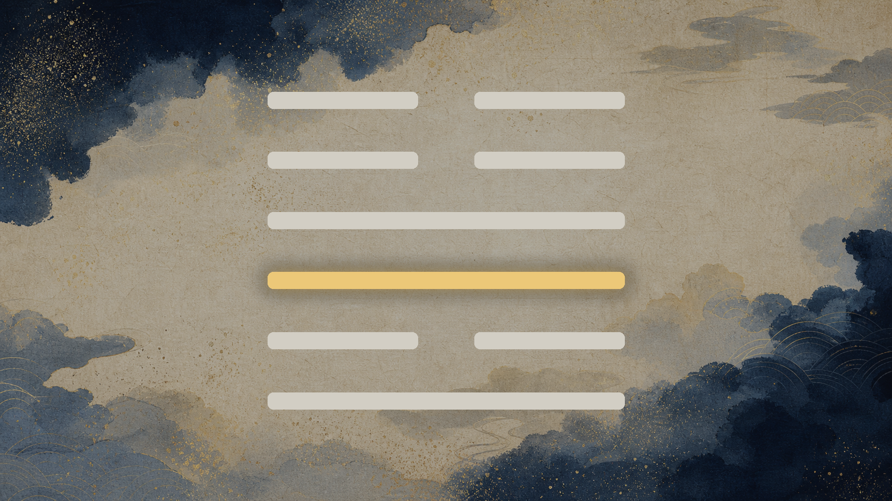

ワンパンマン（サイタマ）× 豊（ほう） ／ 31カット ／ 画風＝木版浮世絵（固定スタイル行・変更なし）

| ID | 幕 | 役割 / 場面 | 何を描くか（一般記号） | アングル・小道具・色 | 種別 |
|---|---|---|---|---|---|
| V_01_01 | 幕1 | 違和感（身に覚え）：議事録から名前が消える 決まったことだけが残り、やった人の欄が空いている机上 | 長机に並ぶ背中の列と、手前に置かれた白紙のままの一枚 | 室内・斜め後ろ・浅い俯瞰 会議机／積まれた紙束／消えかけた墨 墨＋藍（曇り） | AI画像 |
| V_01_02 | 幕1 | 半年後の空白／三千年前の本 誰も開かなくなった記録。空白だけが残っている | 埃をかぶった書類束の奥に、小さく遠い人影ひとつ | 静物・遠景 紙束／薄い埃の光 墨＋生成り | AI画像 |
| V_02_01 | 幕2 観察 | 作品着地：一撃で終わる男 決着はもう着いている。過程はどこにも残っていない | 黒い塊が砕け散る只中に、背を向けて立つ人物のシルエット | 遠景・後ろ姿・低いアングル 砕けた黒い塊（怪物は輪郭だけの影）／土煙 墨＋藍＋金の飛沫 | AI画像★ |
| V_02_02 | 幕2 観察 | 鍛錬：毎日、雪の日も嵐の日も 同じ道を、季節が変わっても走り続けている | 夜明けの道を走る一人の後ろ姿を、雪・雨・炎天の三段で重ねる | 遠景・連続構図（三段） 走る道／降る雪／横なぐりの雨 藍＋墨＋わずかな金 | AI画像 |
| V_02_03 | 幕2 観察 | 無敵と引き換えに失ったもの 冷房のない部屋。強くなるほど、手応えが消えていく | 無風の部屋で、汗の粒だけが光る人物の後ろ姿 | 室内・斜め後ろ・クローズ 閉じた窓／動かない団扇／畳の目 墨＋生成り＋朱の一点 | AI画像 |
| V_02_06 | 幕2 観察 | 登録試験：満点なのに最下位 強ければ認められると信じて並んだ列の、いちばん後ろ | 番号札のような木札が列をなし、その最後尾に一人だけ立つ | 俯瞰・遠景 整列した無地の木札／長い列 藍＋墨 | AI画像 |
| V_02_04 | 幕2 対比 | 対比：高い台に立つ人 持ち上げられている人。何をしたのかは誰も見ていない | 高い台座の上の人影と、それを見上げる群衆の後頭部 | 仰角・遠景 台座／掲げられた旗（無地） 金＋藍 | AI画像 |
| V_02_05 | 幕2 対比 | 同じ覆いが、二人に逆向きに掛かる 一つの覆いが、隠す側と照らす側に分かれている | 厚い雲が二つに割れ、片方は人影を隠し、片方は人影を照らす | 対称構図・遠景 厚い雲／二筋の光 墨＋金 | AI画像★ |
| V_02_07 | 幕2 観察 | 隕石：助かったのに、感謝は残らない 命は残った。感謝は残らなかった | 空から落ちる火の玉と、砕けた破片、指を差す群衆の背中 | 広景・仰角 火の玉／砕けた岩／群衆の後頭部 朱＋墨＋金 | AI画像★ |
| V_02_09 | 幕2 観察 | 深海王：汚れ役を買って出る 勝った人が、悪く見えるほうへ歩いていく | 倒れた複数の人影の奥に立つ一人が、背を向けて去っていく | 遠景・後ろ姿 倒れた人影群／濡れた地面 藍＋墨 | AI画像 |
| V_03_01 | 幕3 種明かし | 卦の提示：豊（ほう） 絶頂を扱う卦の名乗り | 漢字カード「豊」＋上に雷、下に火の象（Remotion動的描画） | カード・中央 雷の意匠／火の意匠 墨地＋金の題字 | Remotion描画 |
| V_03_02 | 幕3 種明かし | 卦辞：真昼の太陽のようであれ いちばん高いところ。ここから翳りが始まる | 南中する金の太陽と、その下の小さな人影 | 広景・仰角 真昼の太陽／短い影 金＋生成り | AI画像 |
| V_03_02B | 幕3 種明かし | 明るさと動き、二つで一組 見抜く力と、進める力 | 灯（下）と雷（上）が並び立つ象徴図 | 静物・対構図 灯明／雷紋 藍＋金 | AI画像 |
| V_03_03 | 幕3 種明かし | 六爻図（GUA6・決定論描画） dbのbinary_le=101100から機械描画（AI生成しない） | 豊の六本の線。三爻を金で強調 | 図・中央 六爻図 藍地＋金 | 六爻図(決定論) |
| V_03_04 | 幕3 種明かし | 二爻・四爻：真昼なのに星が見える 太陽はそこにあるのに、星のほうが見えている | 昼の空に北斗七星が浮かび、太陽は厚い幕の向こうにある | 広景・空 厚い幕／七つの星 藍＋金 | AI画像★ |
| V_03_05 | 幕3 種明かし | 三爻：茂りすぎた下生え／腕を折る 動けない。だが咎はない | 背丈を越える草叢の中で、腕を垂らした人影 | 遠景・草叢越し 繁茂した草／垂れた腕 墨＋藍緑 | AI画像 |
| V_03_06 | 幕3 種明かし | 開示：本文が言う覆いは党派の争い 覆いは外から掛かってくる | 人影が互いに影を投げ合い、渦になっている | 俯瞰・群像 重なり合う影 墨 | AI画像 |
| V_03_07 | 幕3 種明かし | 当てはめの開示：折られたのは評価へ届く腕 行動する腕は動く。届く腕だけが折れている | 二本の腕。一方は拳を握り、一方は途中で断たれている | 静物・対比クローズ 拳／断ち切られた腕の線 墨＋朱 | AI画像 |
| V_03_08 | 幕3 種明かし | 上爻：門から覗いても誰も見えない 豊かさの果ての、完全な暗さ | 豪奢な門の内側が、黒く塗り潰されている | 正面・門 大きな門扉／閉じた閂 金＋墨 | AI画像★ |
| V_04_01 | 幕4 刃 | 刃：書く一手間を誰も引き受けなかった 覆ったのは上司ではなく、その場の全員 | 冒頭と同じ会議机に戻る。背中が並び、白紙は白紙のまま | 室内・斜め後ろ（冒頭と同構図） 会議机／白紙 墨＋藍 | AI画像 |
| V_04_02 | 幕4 刃 | 刃：私も確かめなかった 確かめないほうが楽だと、知っていた | 席を立つ一人の後ろ姿。机には確かめられなかった紙が残る | 室内・後ろ姿 置き去りの紙／引かれた椅子 墨＋生成り | AI画像 |
| V_05_01 | 幕5 処方箋 | 処方の入口：覆いは外せない 爻の言葉と、そこから考えた一手を分ける | 下から上へ伸びる六段の階段（金の線） | 静物・垂直構図 六段の階段 藍地＋金 | AI画像 |
| V_05_02 | 幕5 処方箋 | 初爻：届け先を一人に決める 全員ではなく、一人へ流す | 多数へ伸びる糸を断ち、一本の糸だけが灯へ繋がる | 静物・象徴 細い糸／灯明 藍＋金 | AI画像 |
| V_05_03 | 幕5 処方箋 | 二爻：事実だけを淡々と残す 論破ではなく、記録 | 小さな石を一つずつ積む手元 | 手元クローズ（顔は描かない） 積まれた石／墨の一行 墨＋生成り | AI画像 |
| V_05_04 | 幕5 処方箋 | 三爻：一行だけ書き残す 動かせなかった、という事実を残す | 草叢の中で、膝の上に置いた紙へ一行だけ引く手元 | 手元クローズ 紙／筆／繁茂した草 墨＋藍緑 | AI画像 |
| V_05_05 | 幕5 処方箋 | 四爻：同じ質の人へ、一度だけ 返事が来なくてもいい | 離れた二つの灯が、同じ高さで灯る | 遠景・対構図 二つの灯 藍＋金 | AI画像 |
| V_05_06 | 幕5 処方箋 | 五爻：助言を一つ、そのまま採る 自己流の完成度を上げ続けない | 差し出された手から、器を受け取る手元 | 手元クローズ 器／差し出された手 生成り＋金 | AI画像 |
| V_05_07 | 幕5 処方箋 | 上爻＝警告：門を閉じない 今日、決めた一人へ一つだけ渡す | 閉じかけた門の隙間から、一条の灯が差し込む | 正面・門（V_03_08と対） 門扉／細い光の筋 墨＋金 | AI画像★ |
| V_05_08 | 幕5 処方箋 | 象辞：明るさで調べ、動きで決着 覆いは外せないが、照らすことと届けることはできる | 灯（調べる）と雷（決める）が同じ画面に並ぶ | 静物・対構図 灯明／雷紋 藍＋金 | AI画像 |
| V_06_01 | 幕6 余韻 | 余韻：それでも今日も一撃で終わる 世界はまだ、正しく見ていない | 遠景に小さく、背を向けて立つ人物。周囲は静か | 遠景・引き 開けた地面／薄い光 生成り＋墨 | AI画像 |
| V_06_02 | 幕6 余韻 | 棘：閉じた門は同じ形をしている 傲慢で閉じても、諦めで閉じても | 並んで閉じた二つの門。外からは見分けがつかない | 正面・対構図 二つの同じ門扉 墨＋金 | AI画像★ |
★＝モーションの見せ場候補（7カット）。種別「AI画像」＝木版浮世絵で生成、「Remotion描画」＝漢字カード（AI生成しない）、「六爻図」＝db駆動の決定論描画。